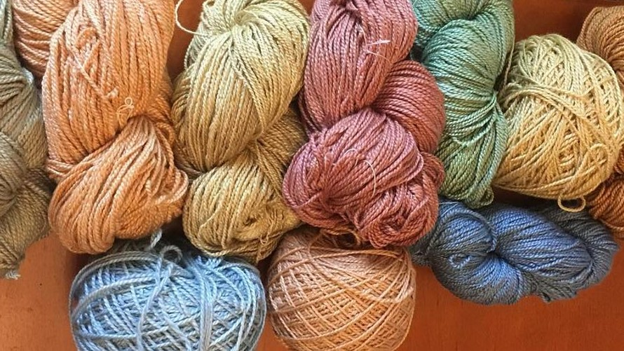
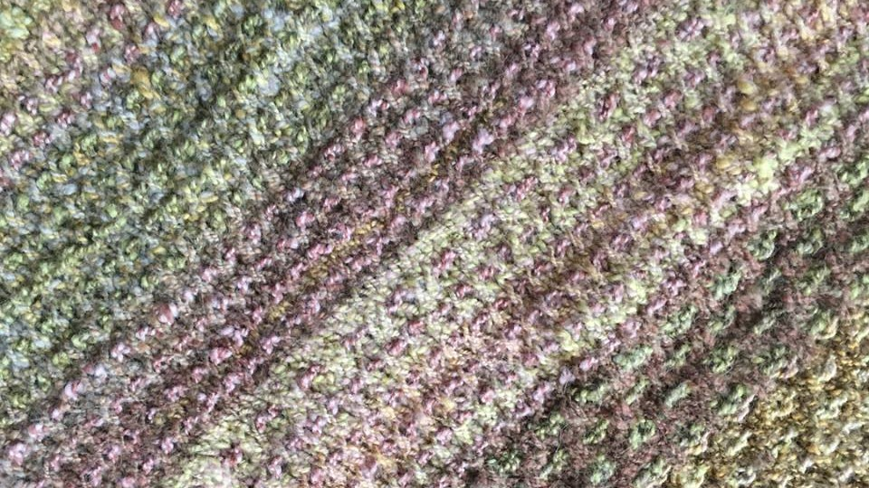
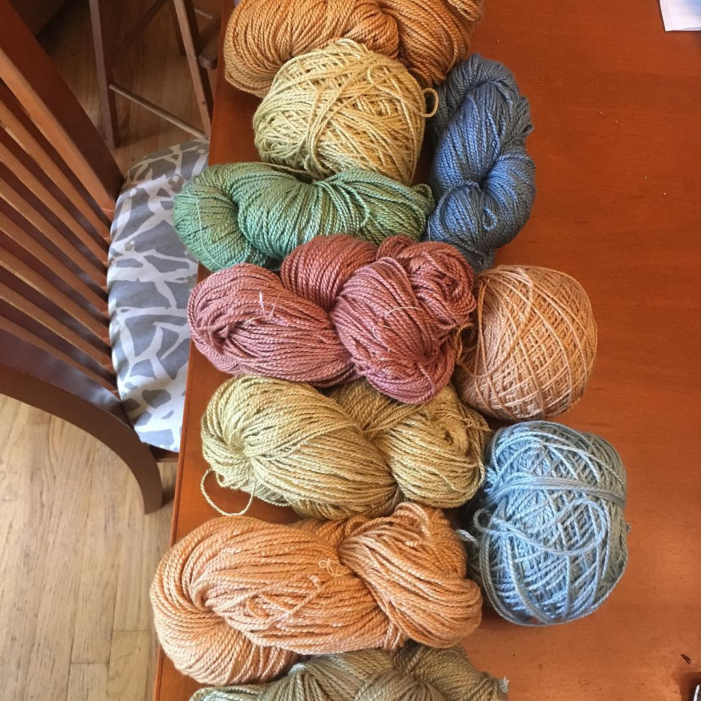
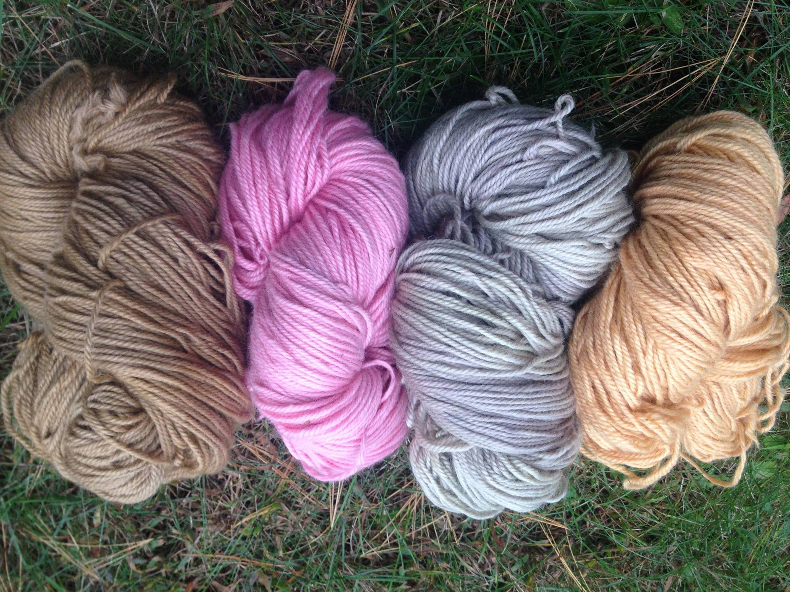
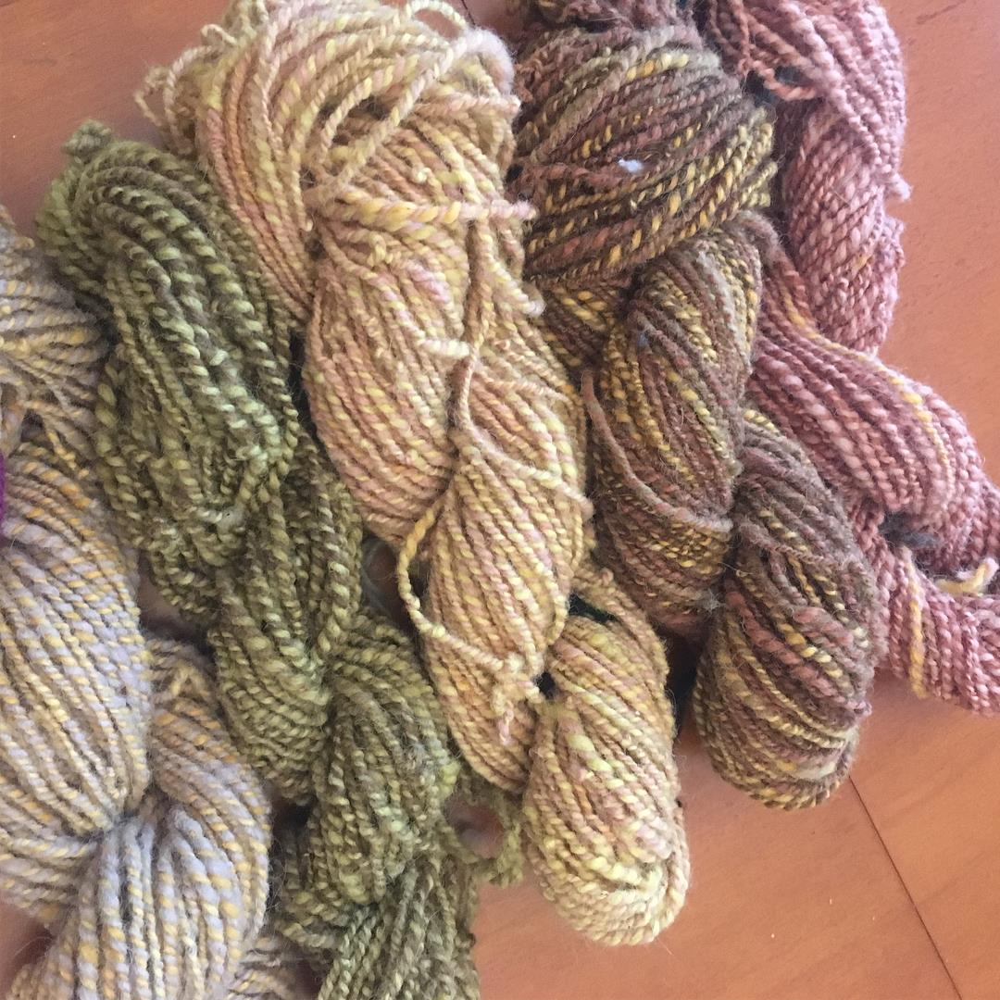

Our Story
Our sheep are local and loved! These beauties come from Washington County, NY. Our shepherdess work hard to keep things organic and natural

Naturally Dyed Yarns
It's easy, and whats more, it's fun! As suggested by the name, natural dyeing first involves making dyes from naturally occuring ingredients

Patterns & Kits
Have you ever wanted to dye your own yarn our create your own pattern? Dive in to the exciting world of dyeing!

Fingering Yarn
Size: 500 yd/4.3 oz (457m/122g) skeins
Content: 100% American Wool
Gauge: Fingering weight.
7-8 stitches per inch on US 1-3.

DK Yarn
Size: 280 yd / 4 oz (255m / 115g) skeins Content:100% American WoolGauge: DK weight. 5.25-6 stitches per inch knit on US 5-7.

Chunky Yarn
Size:240 yd / 7.2 oz (219m / 205g) skeins Content:100% American WoolGauge: Chunky weight. 3-3. 5 stitches per inch on US 10-11.